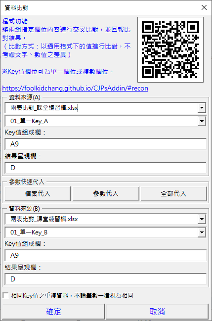

Excel 兩表比對：兩份名單的新增、遺漏一次標出來
這個月和上個月的客戶名單，誰是新增、誰不見了？系統匯出的清單和手上的對帳表，有沒有漏掉的？用 Excel 公式要一筆一筆查。CJP 增益集 (CJPsAddin，免費的 Excel VBA Add-in) 的兩表比對，用同一個 Key (例如客戶編號) 對照兩張表，每一列直接標上 兩表皆有、僅在A表 或 僅在B表。
適合這些時候用
- 這個月和上個月的名單，誰是新增、誰不見了
- 系統匯出的清單和手上的對帳表，有沒有漏掉的
- 兩份名單合併前，先確認差在哪幾筆
- 原本要用 VLOOKUP 一筆一筆查「找不找得到」
兩表比對只看這筆資料有沒有，不比較其他欄位的內容。要比較同一筆資料的內容一不一樣 (例如兩邊的金額)，用單表比對。
用 Excel 公式怎麼做？
最常見的做法，是在 A 表旁邊加一欄，用 COUNTIF 查這個編號在 B 表出現幾次 (假設編號在 A 欄，B 表的工作表叫「B表」)：
=IF(COUNTIF(B表!A:A, A2)>0, "兩表皆有", "僅在A表")
公式可以用，但有幾個麻煩的地方：
- 只查得到「A 表的哪些不在 B 表」，反過來還要在 B 表再寫一次
- Key 由好幾欄組成時 (例如「分行＋帳號」)，要先做輔助欄把欄位串起來，或改寫成 COUNTIFS
- 同一個編號有好幾筆時，看不出兩邊的筆數對不對得上
- 資料一多，整欄公式會讓檔案變慢；每個月都要重新拉一次
用 CJP 增益集：3 個步驟
- 在增益集選單點「常用功能二 → 資料比對 → 兩表比對」
- 資料來源 (A)、(B) 各選一個活頁簿和工作表 (可以在不同檔案)，填 Key值組成欄 和結果呈現欄：
- 單一 Key 填標題格，例如
A9 - 多欄 Key 填
A;B;9(欄名用分號分隔，最後的數字是標題列) - 兩張表格式相同時，按「參數快速代入」把 (A) 的設定帶到 (B)
- 單一 Key 填標題格，例如
- 按「確定」，兩張表的結果欄都會標上比對結果
設定會記在工作表裡，下次在同一張工作表開啟時自動帶入。

比對結果怎麼看
| 結果 | 意思 |
|---|---|
| 兩表皆有 | 這個 Key 在兩張表都找得到 |
| 僅在A表／僅在B表 | 只出現在其中一張表：新增或遺漏的資料 |
| …_有重複項 | 這個 Key 在表裡有重複 |
同一個 Key 有好幾筆時，預設筆數也要一致：例如 A 表 O1001 有 3 筆、B 表有 2 筆，前 2 筆配對成功，多出的第 3 筆是「僅在A表」。勾選「相同Key值之重複資料，不論筆數一律視為相同」，就只看有沒有、不看筆數。
常見問題
兩張表的欄位順序不一樣，可以比對嗎？
可以。A、B 兩張表的 Key 各自設定，例如 A 表的客戶編號在 A 欄、B 表在 C 欄都沒關係。
兩張表在不同的 Excel 檔案，可以比對嗎？
可以。資料來源 (A)、(B) 各自選活頁簿和工作表，兩個檔案都開著就好。
員工編號兩邊都有，但薪資不同，會被找出來嗎？
不會。兩表比對只看 Key，結果會是「兩表皆有」。要比較內容一不一樣，請用單表比對：兩份資料貼在同一張表，內容不一致的格子會標成粉紅色。
Key 要用好幾欄組成，怎麼填？
例如 A、B、C 三欄，標題在第 9 列，就填 A;B;C;9。欄名用半形分號分隔，最後的數字是標題列。
要付費嗎？公司電腦可以裝嗎？
免費。安裝方式和注意事項 (例如公司的巨集安全性設定) 請看安裝方式。使用前請先備份資料。